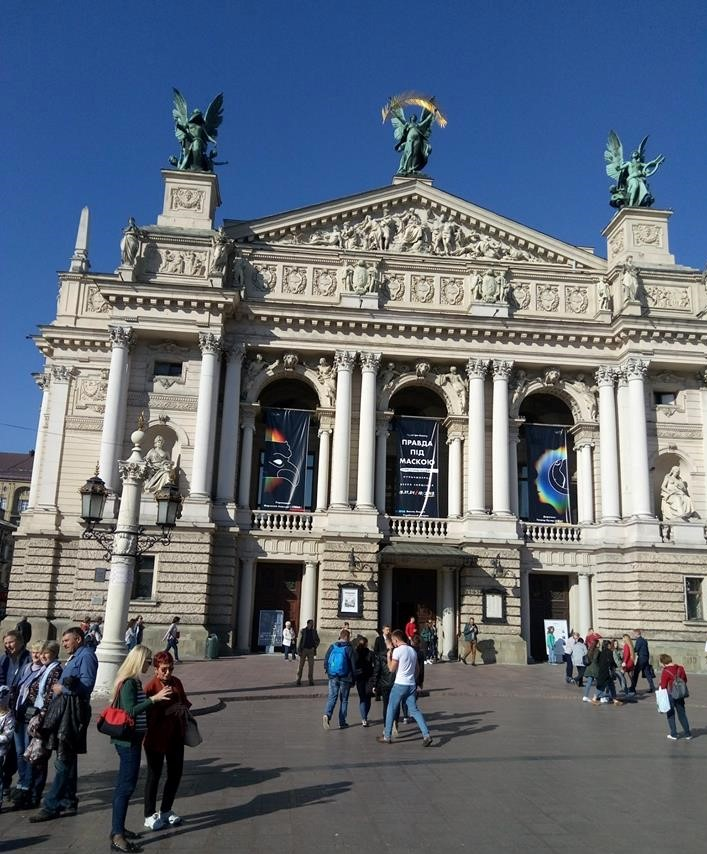
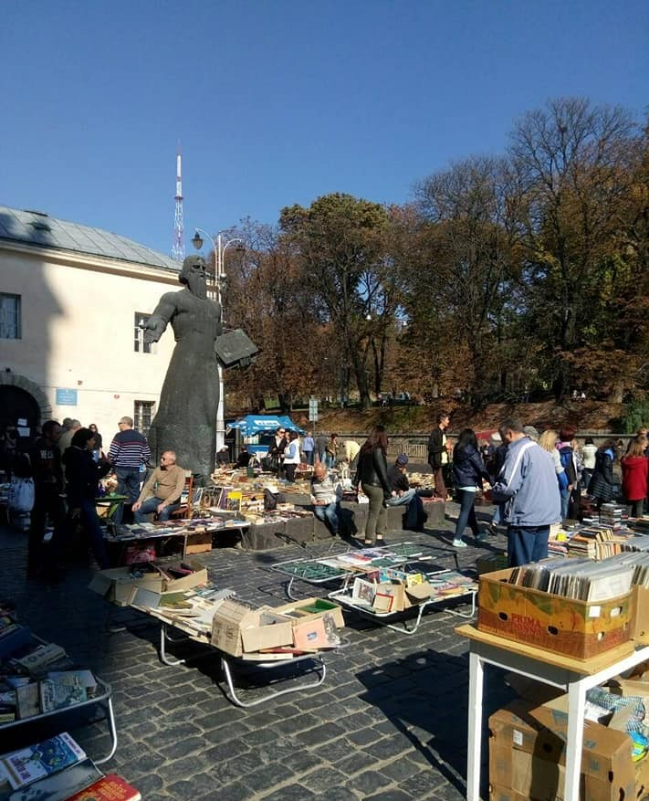

В субботу, 13 октября, ученики 9-10 классов Ужгородской школы №3 побывали на экскурсии в городе Львов. Дорога до Львова заняла более 4-х часов. Все были в ожидании нового и интересного. Надежды школьников оправдались.

За небольшое количество времени они посетили самые знаковые во Львове достопримечательности. Ученики посетили храм Успения Богородицы, который был построен еще в конце XVI века в стиле итальянского ренессанса. Рядом с храмом дети увидели памятник Ивану Федорову - основателю книгопечатания во Львове.

Затем ученики отправились к Доминиканскому костелу и монастырю. Это один из самых значительных памятников архитектуры в стиле барокко в городе. Неподалеку храма есть памятник Дровняку Никифору-Епифанию. По легенде, знаменитый художник выполняет одно желание каждого, кто подержит в руке его отполированный палец или нос. Школьники, как и сотни других туристов, тоже загадали желание и по очереди держались за палец художника. Переходя от одной достопримечательности к другой, дети посетили Площадь Рынок и Львовский оперный театр. А в завершение экскурсии ученики поехали на Лычаковское кладбище - историко-мемориальный музей-заповедник. Дети остались довольны поездкой и привезли с собой много хороших эмоций и воспоминаний.